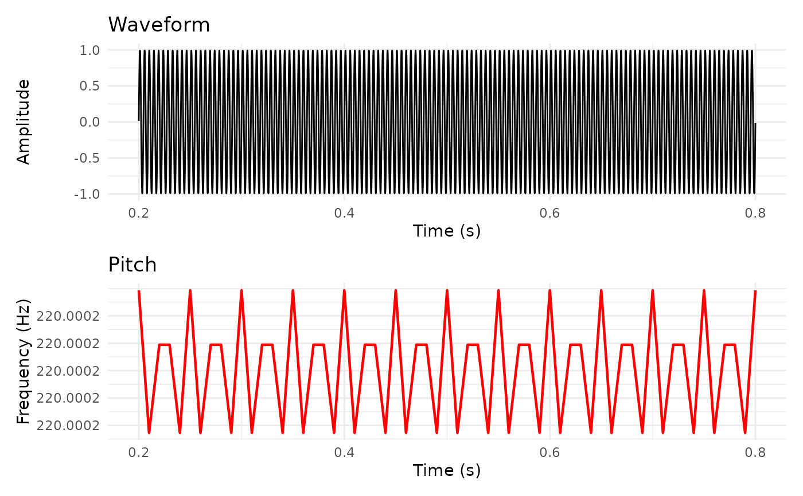

Creates a two-panel visualization showing the sound waveform in the top panel and pitch contour in the bottom panel, aligned by time. This is a common Praat visualization pattern.
Usage
plot_sound_pitch(
sound,
pitch,
from_time = NULL,
to_time = NULL,
waveform_color = "steelblue",
pitch_color = "darkblue",
pitch_floor = NULL,
pitch_ceiling = NULL,
title = NULL,
...
)Arguments
- sound
Sound object
- pitch
Pitch object
- from_time
Start time in seconds (NULL = from beginning)
- to_time
End time in seconds (NULL = to end)
- waveform_color
Character. Waveform color (default: "steelblue")
- pitch_color
Character. Pitch color (default: "darkblue")
- pitch_floor
Minimum F0 to display in Hz (default: NULL = auto)
- pitch_ceiling
Maximum F0 to display in Hz (default: NULL = auto)
- title
Character. Overall plot title (default: NULL)
- ...
Additional arguments (currently unused)
Examples
if (requireNamespace("patchwork", quietly = TRUE) ||
requireNamespace("gridExtra", quietly = TRUE)) {
sound <- Sound$create_tone(frequency = 220, duration = 1.0)
pitch <- sound$to_pitch()
# Basic two-panel plot
plot_sound_pitch(sound, pitch)
# Time range and custom colors
plot_sound_pitch(sound, pitch,
from_time = 0.2, to_time = 0.8,
waveform_color = "black",
pitch_color = "red")
}
